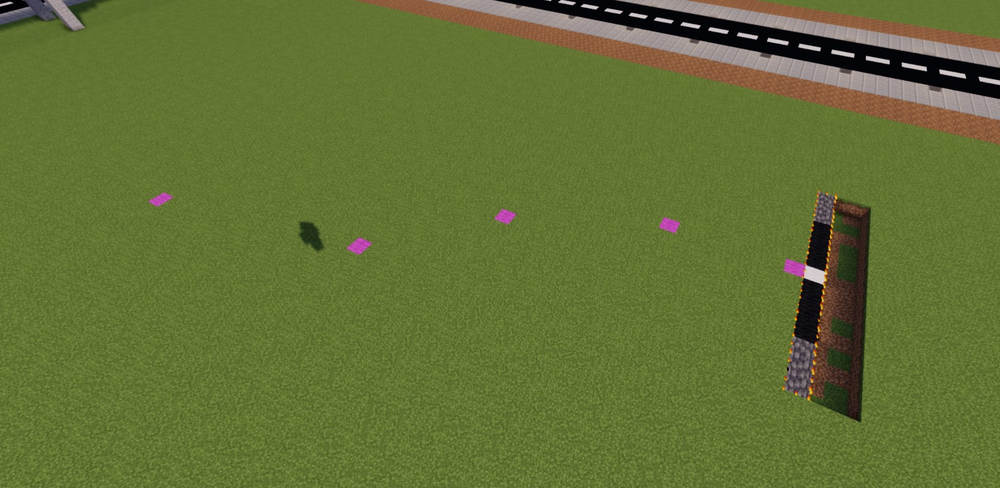
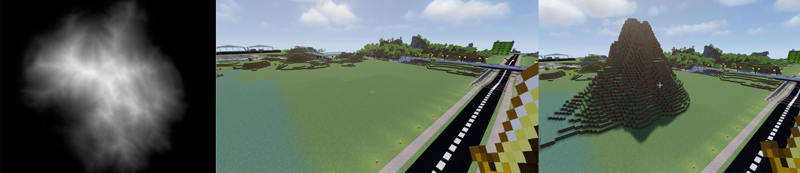
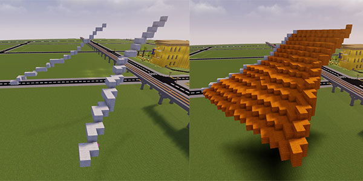
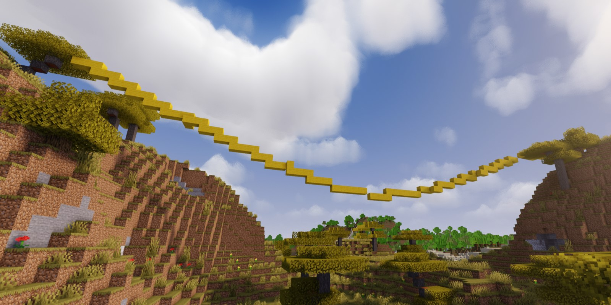

//mask 17,17:1,17:2,17:3,17:4,18,18:1,18:2,18:3,18:4,31:1,175:2,31:2,175:3,157,32,37,38,38:1,38:2,38:3,38:4,38:5,38:6,38:7,38:8,39,40,106,162,161,161:1,162:1,100,mushroom_stem,lily_of_the_valley,brown_mushroom_block
//copy
//br sweep
(If you are familiar with photoshop pen tool, it's good. This command works similar to it,
and well as its equivalent requires a little bit of practice.)

(This technique while using more than 1 block of height can be used to generate curved tunnel, bridge or cannal!)
//set minecraft:smooth_stone_slab[type=top]
//set minecraft:oak_log[axis=z]
(works only if you faceing 'south' ⚠️)
//generate -ho 35 ((x%2)+z)%2==1
y -= expression == ↑ (up)
y = expression == ↓ (down)
//brush deform
//hcyl glass 10,15 10
//g -h 35:15 cos(sqrt(x^2+z^2)*5)/2
//replace minecraft:oak_stairs ^minecraft:acacia_stairs
/brush height 50 https://i.imgur.com/JoSyq0z.png 0.1 0.7 -r

(blocks cannot be connected only by corners in the first step)
//br spline [id] [radius]

//br catenary 35:4 1.1 0

/br copypaste -r -a